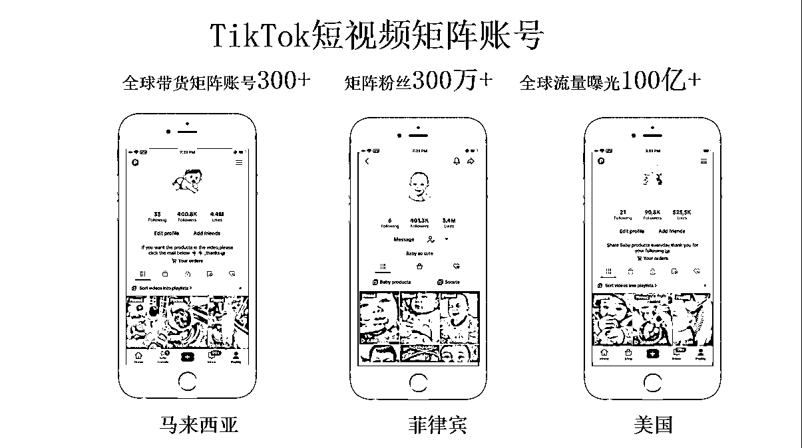
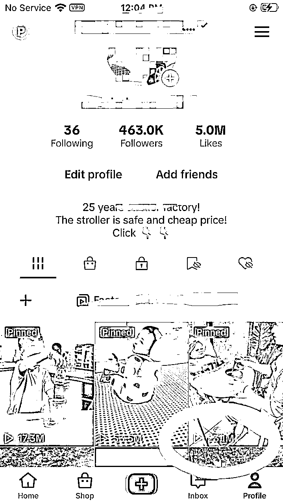

来源：https://xa06j6z232m.feishu.cn/docx/V55ldwqj9o6oupxiACQcCjsin8c
大家好，我是 Lisa，90 后福建人，目前和锦哥、伟豪一起在深圳创业，深耕跨境领域 3 年。从去年开始拥抱AI,然后全力应用AI赋能跨境，并取得了显著成效。
这是我第一次在生财有术发贴，因为最近很多人对出海很感兴趣，但是对于跨境这个赛道，很少有拿到结果的人出来发帖，所以我决定把自己的故事分享出来，希望自己的经历以及对行业的经验可以帮助到更多人能够成功出海，让大家少踩坑，早变现。
借助AI的力量，目前TikTok取得的成效
1、TikToK 东南亚/美区矩阵账号总量 300+，粉丝总数 300万+
2、TiKToK 单条短视频 1.4亿播放，总曝光量 150亿+
3、借力 AI 助力 TiKTok, 变现100万+
链接AI人才，开启AI+跨境合伙人共创模式：
TikToK的变化非常迅速，可能每周都有新的变化和政策。 全球有那么多国家和地区的市场，如美国、东南亚、欧洲、中东和南美等，因此大家必须团结合作，单打独斗往往难以成功。于是我们开启了AI+跨境合伙人的共创模式，首先链接了很多AI领域的高手（伟豪、西羊石、旋子），带领他们一起开启了AI+跨境的出海之旅，一周时间就有了显著成绩。（文中有详细讲述）
1、 羊羊一周内单条视频破 500 万播放 ，涨粉 6000+
2、 旋子仅发布 3 条视频，菲律宾出了三单
早期我也是一名打工人，那时候作为传统媒体人在福建电视台任职，作为栏目组当时的首席记者，跑遍了福建各地，因为当时是在经济频道，所以有幸采访了全省大大小小各个企业，对整个科技发展的趋势和商业环境有了更深刻、更广泛的洞察。
后来随着移动互联网的迅速发展，传统媒体已经开始受到冲击，那时候我就已经开始意识到这个问题，然后就毅然决然选择了离开电视台。当时很多人都在质疑这么好的平台离开可惜了，但是我深深意识到，传统媒体的时代终将走向没落，后来证明我的选择是正确的。
由于当时对科技领域研究比较深，自己对这个赛道也很感兴趣，后来就到厦门进入了一家科技公司任职了三年，从一个普通的品牌策划做到了公司二把手，带领团队操盘了大大小小多个项目，所以对用户需求、产品架构有了更深入的研究，这对我未来的创业发展都奠定了基础。
后来由于工作的机会认识了我现在的合伙人Jason(锦哥)，于是就从厦门转战到福州，开始了我的创业之旅。刚开始创业，摸索过很多项目，自以为以自己的工作能力应该都能驾驭，没想到理想是丰满的，现实果真是残酷的。
创业跟职场是两件截然不同的事，在职场你只要有工作能力就能稳步向上，但是创业不一样，你需要考虑资金问题、资源问题、场地问题、项目营收问题……所以刚开始的项目都以失败告终，把职场这些年赚的钱全部都赔进去了。
但是我就不信了，于是开始对失败的项目进行深度复盘，总结出了自己失败的三个重要原因：一、赛道没选对 二、类目不擅长 三、缺乏创业经验。
于是我开始每天在网上刷各种项目，后来一个偶然的机会了解到了“TiKTok”，那是TK发展比较早期的时候，所有人都还在疯狂做创作者基金。
当时甚⾄还没有出海的概念，也没有那么多⼈聊出海。 我就觉得抖⾳这么⽕，结合海外电商机会肯定更⼤。TikTok 从 2020 年春节后，就⼀直⽕到现在。
不管是下载量超过 50 亿次，成为全球 5 ⼤社交平台之⼀，还是 TikTok 电商从⼀天 30万美⾦到⼀天 3400 万美⾦的增速，包括还有很多⼀年不到，就在 TikTok 卖了上亿⼈⺠币货的卖家。
TikTok 的核⼼，是变化快， 不断在洗牌，所以永远有暴富的机会。 这也是为什么这么多新⼈急迫的想涌进来的原因。
于是我就开始各种摸索，刚开始自己在网上研究，可到最后发现连下载TK都困难，当时就有那种教程：300 元教你注册TK账号，还有各种TK培训（大部分是割韭菜），后来我找到锦哥，很笃定地告诉他，国内抖音不要做了，一起出海（虽然当时我连下载TK都还没摸索出来）。
成功第一步：先付费 “时间成本才是最贵的”
于是我和锦哥，还有另外一个小伙伴，组了一个团队。准备开始 all in 出海。于是开始找培训机构，当时市面上很多几千块的TK培训，但是没有考察也不知道哪个靠谱。
后来就在福州的圈子里找到了一家做 TK 的机构，最后花了两万多去线下学习了五天，至少入门了。培训结束之后就开始了最难的部分：做内容。
正好广电的从业经历让我对视频这个领域会比较轻车熟路，但毕竟电视媒体和新媒体的底层逻辑是不一样的，所以我就开始夜以继日地研究内容。
我刚开始选择入局东南亚，东南亚毕竟门槛比较低，非常适合小白入局，我们最早开始做的国家是马来西亚，那时候每天从早剪到晚，没有用任何 AI 工具，用的是 PR+ 剪映，一条一条剪辑，经常剪到凌晨四五点，每天早上都是黑眼圈。
终于皇天不负苦心人，经过我的努力，在一周的时间内我就突破百万流量池了，那时候无疑是兴奋的，后来渐渐地摸索到了 TK 的底层算法规律，于是开始不断爆流，百万播放的视频层出不穷，后来流量跑到了千万，甚至单条过亿。
那时候跨境圈内人给了我们个名号：流量天花板。
正所谓流量在哪里，生意就在哪里。流量跑通之后，粉丝也涨到了 1000 粉，然后我就开始挂小黄车，很快就出单了，第一次出单的是一个几块钱的小玩具，出了十几单。
然后对选品也开始渐渐有了感觉，很快又爆单了，一条播放量 20 几万的短视频一天就出了几百单，对于当时入局不久的我们来说，无疑是欣喜若狂的。
于是我就开始加账号，从起初的 6 个账号直接加到了 15 个账号，最高峰一个人做了 30 个账号，主要分布在东南亚 3 个国家：马来西亚、印尼和菲律宾，后来也拓展到了美区。

然后每个账号每天发 3 条视频，在东南亚佣金这么低的情况下，我一个人每个月的佣金收入就有 3万+，但这都是每天熬夜赚的辛苦钱。每天没日没夜地剪辑视频，剪到昏天暗地。后来我们就决定招聘一些短视频剪辑，最高峰招募了快 20 个剪辑，每天都在疯狂做短视频。
都说出海不能闭门造车，一定要深入本土化市场，正巧当时印度尼西亚做化妆品工厂的一个华侨邀请我们去印尼考察，所以我和合伙人锦哥就决定去印尼考察一下。印尼作为东南亚人口最多的国家，人口将近 3 个亿，可想而知市场规模是很大的，而且印尼作为 TikTok 出海最成功的第一站，对于内容电商的消费习惯也是最成熟的。
当时大家对东南亚都有很深的误解，在去之前就有非常多人嘱咐我们一定要多加小心，希望我们平安回来。在整个氛围的渲染下我们也战战兢兢的，现在想想挺好笑的哈哈。
去到了印尼首都雅加达，给我的感觉还是跟想象中差距很大，包括当地文化、消费习惯还有用户喜好。首先感触最深的就是印尼的贫富差距，同一条道路，左边贫民窟，右边富人区，跟我们国内的环境差距还是很大，有点类似 90 年代的中国。
但是你想想，那个年代的中国，只要能下海经商，遍地都是机会，那个年代不知道造就了多少财富神话。
印象最深的还有就是雅加达的摩托车，真正的摩托车之城，所以这也造就了 TikTok 上一个巨大的产业机会：摩托车配件，圈内一个卖家就光卖摩托车安全帽一个品，就做到很大。
因为当时我们做的主要是母婴赛道，所以特意去线下考察了母婴市场，其中一个做得非常大的母婴品牌 MOOIMOM 就是国人做的，短短三年时间就已经跻身到头部了，覆盖了雅加达大部分的线下市场。而且产品价格不比国内一线母婴品牌便宜。
所以这也是一个巨大的信息差，我们总以为做东南亚就是要便宜，但是很多高端品牌反而率先崛起了。印象特别深的一件事，我们当时特意在高端商场买了一包母婴湿纸巾，因为在 TikTok 上的母婴类目，销量排名第一的是湿纸巾，第二才是纸尿裤。
因为不像国内，东南亚那边给宝宝并不用棉柔巾，反而是用湿纸巾。高端商场的一包湿纸巾居然卖到了十几元人民币，而且纸巾一撕就碎了。这让我们相当惊讶，我们在国内就连普通纸巾都可以做到放在水里都不会变形。所以可想而知，在产品的品质上差距还是巨大的，我们国内制造的品质过去简直就是降维打击。
比如像纸尿裤，现在印尼主流的纸尿裤居然是那种很厚的“木浆”材料的纸尿裤，也就是在国内已经被我们淘汰掉的品类。现在的纸尿裤都是越做越薄，但是在那边的观念还是要够厚才能吸水。所以没有深入到本土，很多信息跟我们想象中的差距都是巨大的。
印尼本土母婴产品的形态跟国内差异还是比较大的，所以我们在 TikTok 做一些新奇特品的时候，发现不管是流量还是销量都很容易大爆，因为他们都没有见过。
就比如我当时做的一条宝宝辅食勺的短视频，这个产品在国内我们基本都不会用，但是在东南亚就爆了，一条短视频就跑了 2000 多万播放，出了 5000 多单。

所以如果做跨境市场，不能闭门造车，一定要去了解当地的消费习惯，文化风俗等，因为每个市场差异挺大，一定要因地制宜。
每一段创业史一定都是建立在一个个大坑之上的，当我们面对全新的市场，都会面临各种各样的诱惑，也进行了各种尝试，踩了很多坑，也亏了一些钱。
当我们短视频流量和带货跑通了以后，我们就想开始深入到后端，所以就自己开了TK小店。去印尼考察完之后，就想尝试做印尼的本土化，因为印尼很重视对本土产业的保护，所以印尼一直以来都只有本土店，没有跨境店。
跨境店是可以从国内一件代发的，但是本土店必须从本地发货，这就意味着如果你想做印尼这个市场，你必须把货屯到当地去。
当时我们就做了一个错误的决定，自己搞了一批货屯了过去，印尼的物流费是比较贵的，而且光海运就走了一个多月，各种成本算下来，产品必须卖得更贵才能覆盖这个成本，但是没有品牌效应的时候你卖贵是几乎没有竞争力的。
当时我们运气也是很背，货刚屯过去，印尼就遇到了 TK 封禁。所以这批货就硬生生亏了！当时也是血泪的教训。因为做货和做流量是两件事情，需要的能力也是不一样的。
应该是把链路做短，才可能把成效放大，一定不要选择做全链路！
在短视频取得了一定成绩后，我们当时就想那么大的短视频流量，如果开直播那岂不是很有优势？所以当时在福州就搭了一个海外直播间，好不容易在留学生群体里请到了几个外模。因为在福州想请外模是非常困难的，福州的留学生群体屈指可数，更别说一些其他的外国朋友了。
这是我们当时请的一个美妆博主，跑美妆直播，当时也搞了大半年，投入了很多精力，当时最高在线也拉到了几百人。但是光赚到了热闹，没有什么成效。
因为在国内做直播，IP 是非常不稳定的，人员成本也高，主播也不稳定，因为他们都还在上学。所以想要做直播基本是要本土化，尤其我们当时想做东南亚，你就得请一个穆斯林的主播，但是在国内你是找不到这些主播的，如果你能做到本土化，在印尼一个主播一个月也就 1000 人民币，人力成本是很低的。
在经历了印尼事件后，我们就坚决不碰货了。除非你是厂家或者品牌商，那你有产品优势可以去做这件事情。对于普通小团队而言，碰货就是无底洞。
首先你没有价格优势，你是卷不过别人的。
其次囤货就意味着压款，如果你没有足够的资金优势，你是很难做这件事的。
还有就是碰货的话意味着你要面临非常多问题：海外资质、海运物流、海外仓、发货退货。
所以我们一定要做轻，做短，做专业，在一个自己有优势的板块去垂直深耕。
后来我们就一直深耕在短视频领域，虽然赚钱，但是半年后，小伙伴的视力一个个都下降得厉害，我把各种防蓝光眼镜、叶黄素都试了一遍，也无济于事。大家的身体也吃不消，而且剪视频本身就是非常枯燥且机械化的事情。
后来我们就到处去寻找，有没好用的软件可以替代人工，也试用了市面上 10 多款软件后，发现都不行，不能满足我们的需求。
后来就咨询了做技术的小伙伴，因为我本身对短视频的结构理解比较深入，再加上我在科技公司做产品架构的沉淀，所以对于开发产品会更加容易上手，后来我们就自己开发了一套AI剪辑软件，让AI来替我们工作。
现在用 AI 赋能 TikTok ，效果如何？
自从用了 AI 以后，我们一个人一天可以用AI软件剪几百上千条视频，AI剪辑的视频最高的一条能跑到 2600w 播放，几百万的视频也很多，在剪辑视频这件事上，极大地解放了我们的时间和双手，这样我们就可以把更多的精力用来研究内容，研究选品上。
因为如果是纯人力的话，你做账号的极限也就是 30 个，做得比较优秀的情况下一个人的佣金极限也就 2-3万。但是如果借用了 AI 工作，人效比一下就上去了，而且不再需要那么多基础剪辑人员。只需要几个懂内容，会用 AI 的人，就可以做到之前 20 个人做到的体量。
我们矩阵批量做短视频的流程：
1、爆款文案：我们一般会去网上找对标账号的爆款文案，然后用 kimi 或者 chatGPT 改写文案。因为是做矩阵，所以改写 10 遍， 20 遍都是可以的，只要不是一模一样就可以。以下是我们常用的提示词结构：
改写文案：“告别毛躁，迎接柔顺！这款洗发水，让你的秀发如丝般顺滑。”
理由：增加了“告别毛躁”和“如丝般顺滑”的描述，更形象地传达了产品效果。
改写文案：“智能生活，触手可及。这款手表，是你生活中的得力助手。”
理由：通过“触手可及”和“得力助手”的描述，增加了产品与用户生活的关联性。
改写文案：“假期不等人，旅行说走就走。探索未知，享受自由。”
理由：增加了“假期不等人”和“享受自由”的描述，强化了行动的紧迫感和旅行的乐趣。
下面我举个例子：
比如我们找到一条爆款短视频文案（以香水为例）
香水文案：
这会逛街就喷这款香水，你身边路过的男孩都想多看你一眼，就是这款玫瑰香水，天然花瓣，古法萃取，它给人一种高冷温柔，从容不迫的雅致。和男朋友约会的时候喷一喷，也很适合逛街的时候喷。
改写后：
改写文案：“走在街上，让每个目光都为你停留。这款玫瑰香水，以天然花瓣古法萃取，释放出高冷而温柔的气息，从容不迫的雅致，让你在任何场合都成为焦点。无论是甜蜜约会还是悠闲逛街，它都是你的完美选择。”
理由：增加了“让每个目光都为你停留”和“让你在任何场合都成为焦点”的描述，强化了产品的独特魅力和适用场合。
2、素材来源：素材有 2 种来源方式：
一种是原创拍摄，我们一般会多机位批量拍摄素材，可能拍一天，一周或者一个月的素材量就有了，
第二种素材来源就是网上下载，我们会用批量化下载视频的工具去抖音，视频号， TikTok 上找到对标账号、视频去批量化下载，然后做好文件夹的分类，做好素材库，以后就可以重复多次使用，
3、视频剪辑：用AI剪辑软件去批量化混剪视频，就可以高效产出了，一般是 100 个素材，可以产出 300 条视频（东南亚），美区的话比较严格，最好是 1：1。
AI剪辑短视频，几个底层逻辑？
1、AI 更多是做 1-100 的事情，很难帮你做0-1，就是原来你一天只能剪 10 条视频，现在ai可以帮你剪 100 条， 200 条。但是ai暂时还无法确保剪出的视频就是爆款视频，就是百万播放。
2、内容就是 0-1 的过程，短视频的结构，爆款的逻辑依然还是要人工去拆解出来，然后把这个爆款逻辑告诉 ai，它按照你的结构去批量生产出来。这个点是非常多人的误解，误区。
3、我相信在不久的时间内，可能 2个月，3个月，ai 就可以做拆解出爆款短视频结构的工作了，然后按照这个结构，大家去填充内容就好了，这时候就实现了 ai 对短视频生产的 0-1。这个是我们很期待的方式，我们团队也在研究了！
2024 年，应该是 AI 大爆发的一年，我们也意识到 AI 时代已经到来了！所以我们团队决定从福州转移到深圳，因为无论是 AI ,还是跨境，深圳都拥有最好的土壤。于是就在今年的 1 月份，我们举家迁移来到了深圳，正式开始了福建人在深圳的创业之旅。
后来我们的整个 AI 短视频解决方案也受到了整个跨境圈的关注，因为我们不仅用AI，而且可以跑出千万级播放流量，这对于很多卖家来说都是刚需。所以后来我们就延伸出了更多的变现模式。下面就拆解下我们是如何变现的：
有了流量之后，最基础的就是挂橱窗进行带货了。TikTok 的带货模式和抖音是如出一辙的，都有精选联盟。所以普通人只要做账号挂精选联盟就可以变现了。
我最早期做的是玩具账号，玩具在东南亚是比较容易出单的。因为玩具是非常符合内容电商逻辑的一个类目，如果一条短视频爆流了，是非常容易爆单的。
但是东南亚的产品价格都比较低，佣金也没有国内那么高，佣金比例大概是5—15个点，但是比较容易放量，因为可以做矩阵账号。
首先，你要给自己的账号进行包装，这样会让用户产品一定的信任感，从而购买你的商品。
其次，你要根据你的产品类型创作一条高质量的视频内容，什么是高质量的视频内容：黄金前三秒+产品介绍+使用效果。
往往一条好的视频内容只需要通过短视频画面就能吸引用户进行下单购买。特别要注意的是，TK 的音乐很重要，和国内不一样，国外是非常注重音乐版权的。所以不要直接用国内的音乐作为你短视频的BGM，在发布短视频的时候再添加音乐。
如果是不挂车的视频就用普通音乐，如果是挂车的视频就用 Commercial music (商用音乐)，而且一定要打上精准的标签，这样平台才会根据你的标签，推送给更精准的受众群体。
当你的粉丝涨到开通橱窗权限的粉丝数后，你就可以开通橱窗进行带货了。目前，美区需要5000粉、印尼需要2000粉，其它东南亚国家1000粉，菲律宾只需要600粉。
所以建议新手入局的话可以选择东南亚，门槛低，好上手，成本低，也容易跑通闭环。开通橱窗以后，就可以开始选品挂车了。
目前东南亚美妆个护、家居好物、玩具、3C好物、小家电等都是比较热门的类目。可以先选择多类目进行测试，然后测通后再深耕一个类目。
我们当时光一个账号每月的佣金就能达到 20000+ 人民币，对于普通人而言，这无疑是路径最短的一条变现方式。
如果后期出单量比较大的话，就可以直接找到商家，谈一个更高的分佣比例。
TK 和抖音一样，十万粉就可以开通星途计划了，也就是“接广告”。因为我们做了垂直类目的 300 个账号，所以有很多相关的母婴厂家找到我们，给他们进行曝光和引流，所以又多了一个广告收益。
广告费用的价格可以根据我们提供的账号曝光数量和推广时长来谈判，目前 TK 上面还没有形成很成熟的广告形态，不像国内达人广告是很成熟的，所以接下来也会慢慢趋向于成熟，那账号积累起来的价值也会越来越大。
因为我们自研的整套短视频的解决方案非常刚需，所以也有很多出海企业找到我们，用我们的解决方案助力他们“低成本”出海。
这样一来，我们的业态中，就会多了一项企业服务的业态，把我们已经成功的模型复制给更多的企业。不仅我们的变现模型拓宽了，也会吸引更多的供应链厂家和我们深度合作。
以下是我们服务过的一些企业案例，这些客户通过 AI 的加持，在 TK 上都做了大量矩阵！
植护纸巾
目前植护纸巾已经成功出海，目前已经是马来、越南、泰国的纸品类第一了，通过大量的矩阵直接植入用户心智，很快就抢占了纸品类的市场。
纸尿裤品牌
我们团队通过拆解纸尿裤的内容结构：黄金三秒（刀片划开）+吸水性测试+产品展示，将一个单品做到自然流千万级播放，然后用AI批量剪辑去复制，从而让品牌得到了大幅度曝光。
AI 学习固然重要，但是我知道，我不可能把每一个板块都学精，虽然好几个 AI 应用方向对我的跨境事业都非常重要，但是每一个 AI 的方向都是极其专业的，都需要深耕。所以这时候“抱团合作”尤为重要。
后来我就首先链接了RPA+ 爆文的教练伟豪，伟豪在 RPA+ 爆文领域非常专业，学习了伟豪的RPA课程，收获很大，正好伟豪在东莞，离深圳也比较近，后来我们就约在深圳见了一次，第一次见面就觉得伟豪很靠谱，有一种莫名的信任感。
那时候我的需求就是通过 RPA 把我们短视频的工作流串起来，让项目每天能够稳定跑起来。伟豪自身对跨境赛道也很感兴趣，看了我们整个短视频的工作流，觉得这个很有得做。
第二次深度交流后，伟豪正式加入了我们，开启了 RPA 赋能跨境电商的项目，于是我们的硅基员工小爱，紫烟，奥特曼等十几个硅基员工正式开始上岗了，每天只需要一个人去管理，就可以 24 小时无休止工作了。
不用吃饭、不用睡觉、不会有情绪，用好硅基员工，真的是既省心省力又高效无比。
这就是未来最先进的创业模式：111 原则：团队 1 个人、投入不超过 1 万块钱，试错期不超过 1 个月，一个人带领一群硅基就是未来的公司结构。
因为我们在跨境中主要涉猎短视频领域，所以我对 AI 视频一直比较关注。后来我就链接了AI视频的头部团队——西羊石。
西羊石团队一共有四个人，个个都是名校高材生，因为AI视频走到了一起。他们对跨境也非常感兴趣，当时我们正在探索AI视频在跨境短视频电商领域的应用，所以大家不谋而合。
当时我们正准备发起 AI 跨境合伙人招募，他们第一时间就加入了进来，执行力非常强，他们中的羊羊第二天就带上电脑来到了公司，开始了跨境项目的深入学习。
羊羊学习也非常勤奋，有一次剪视频剪得太晚就直接在公司睡了。“天赋+努力”，还不到一周的时间羊羊就出了爆款，单条播放量已经突破了 500 万，直接涨粉 6700 。从一个 TikToK 小白直接跃升成了TK流量达人。
不到一周时间，我们孵化的合伙人陆陆续续都跑出了几万、几十万、几百万的播放量，纷纷开通了橱窗开始带货。
现在我们跟西羊石团队一起致力于AI原创视频在跨境电商的应用，除了跑自营项目短视频带货之外，跨境卖家的原创短视频需求量也是巨大的，尤其是在美区，因为美区现在的内容审核机制非常严格，这样的机制正催生了AI原创短视频这样一个刚需且巨大的市场。
因为对于跨境卖家而言，原创拍摄成本极高，因为需要请外模，如果国内没有合适的外模还得寄样到海外进行拍摄。除去样品费和快递费之外，一条短视频的拍摄成本差不多需要几十到几百美金不等，获取素材的周期也随之变得很漫长。
现在，我们可以通过AI技术，自动生成这种高质量的带货短视频，甚至仅凭一张简单的白底图就能实现！
你只需上传一张模特的白底图片，AI就能为模特换上最新的时尚单品，生成虚拟试衣效果，不仅是静态图，AI还能自动生成动态视频，并结合RPA和混剪技术，自动完成后期处理，直接生成成品短视频。
这可能真的是AI短视频电商的终极解决方案了，不用请真人模特，不用寄样，不用怕被达人薅羊毛，每个商家都可以构建自己的自营矩阵账号，全网批量矩阵化自动分发，这简直是跨境卖家的福音！
其实TikTok并不是一个富豪的游戏，普通人也是有机会在里面分一杯羹的。
我们先来看一个大背景。今年国内直播带货的风控力度越来越大，让人不禁思考，到底是谁在带货，带的又是谁的货？如果一个行业进入了高压管控的状态，其实它的红利期基本已经不复存在了。那么，普通人的机会又在哪里呢？
目前，大部分的国内电商卖家逐渐开始出海，要么选择高客单的欧美市场，要么选择低客单的东南亚市场。只要有出海需求，就会源源不断有服务需求，就像我们的AI短视频解决方案，对于出海商家来说都是刚需。
那么，首先我们要提的是东南亚的短视频带货。 要知道，整个东南亚市场的人口红利非常旺盛，比如印尼、越南、泰国等市场的人口基数非常大。虽然客单价不高，但是出货量比较大。 所以，普通人其实可以尝试短视频带货，这是我们在这些市场中可以做的事情。
因为你只需要一台或两台手机就可以开始工作，只需几千块钱，甚至一两千块钱的成本就能进入这个领域。在这个赛道中，大家基本上是通过混剪素材来进行带货。
总体来看，东南亚的市场容量足够让许多新手小白在里面有所作为、有发展空间。
第五个机会是外贸获客。2024 年初，我们就了解到一个案例，仅投入 2000 元的成本，就成功销售了近 2000 万的汽车到俄罗斯市场，这就是 TikTok 所带来的巨大商机。
这样的投入是为何如此低呢？因为我们仅需要做短视频原创内容，两台手机就可以开始工作，一台二手手机 1000 元，两台不就 2000 元吗？我们为二手车行引流，车行则负责成交、聊单以及整体出口的相关手续和审批，而我们只专注于流量。
因此，外贸获客为普通人提供了一个利用原创短视频流量的绝佳机会。
第六个机会是通过短视频引流做海外的知识付费或国学内容。如果你资金有限，完全可以考虑私域运营。
从流量角度来看，你可以制作短视频的原创或搬运内容，因为私域对于内容原创度的检测并不那么严格。
私域引流主要是为了成交，不需要挂小黄车，所以风控度相对较低。现在，许多东南亚、日韩甚至欧美的玩家都在通过知识付费引流到私域，并通过独立站完成交易。
无论是国学还是 TikTok 的培训、教中文、或者是 Word、Excel 软件的教学，这些都是目前大家正在尝试的领域。总体来说，5000 元以内就可以启动这个项目。
总体来看，海外抖音是拥有 35 亿用户的巨大流量池，无论卖货还是私域变现都可选。对从事海外流量业务者，TikTok 是必选平台。
目前短剧出海、小说出海都非常火热，但是对于普通人而言，短剧出海的难度比较大，因为短剧素材有限，版权问题，所以基本都是一些头部机构在搞。
但是小说出海的门槛就很低，普通人只需要负责引流到 APP 就可以，只要有人充值了你就可以拿到分佣，佣金也是比较可观的。而且小说的短视频制作相对比较简单，没有太多版权问题，而且还可以批量制作。
而且不需要粉丝基础，只要有流量就可以，因为在海外，如果要做中视频，基础就是要一万粉丝，门槛是比较高的。但是小说出海门槛就很低，对小白就比较友好。
其实卖号在跨境市场也是一个非常好的生意，因为平台的管控越来越严了以后，刷粉、投流这种起号方式已经不行了，所以所有卖家都需要自然流账号。
如果你比较会做流量的话，再加上 AI 的方式，这也是一个正反馈比较快的变现模式。目前一个美区 5000 粉自然流账号市场价就是 1000—1300 人民币左右，目前是一个极大的刚需市场。
东南亚现在自然流千粉账号市场价也达到了100—300 人民币，未来出海的人越多，这个市场越刚需。
新手若不了解 TikTok 短视频算法的底层逻辑，那么接下来我将详细解析 TK 算法的真实面貌。
TK 采用的是一种信息流漏斗算法机制。 在这种机制下，随着流量层级的提升，作品数量逐渐减少，而曝光量则大幅增加。 起初，系统会给予 200-300 的基础播放量。只有当你的数据越来越符合平台的 算法推荐逻辑时，你获得的流量曝光才会越来越大。
流量从初始层逐级升至五级，我们现在 1000 万播放以上的视频已经非常多，都进入了顶层流量池、TK播放只要突破了百万就已经推向全球了，所以我们很多视频下面的评论都来自不同国家。
接下来我们深入探讨 TikTok 的算法分发机制。
当你上传一条短视频后，系统会进行首轮筛选。刚发布的视频在前五个小时内往 往没有播放量，这是因为系统正在对你的内容进行审核。
审核关注网络行为和内容是否违规，合规后系统才提供 200-300 初始播放量， 初期流量杂乱因账号定位未明确。养号是为账号塑造特定标签，非简单刷视频。 通过这些数据，如点赞率、评论率、转发率、完播率、关注比例和成交密度等， 系统可以判断你的短视频质量和账号标签。在后续推送中，系统会根据你的账号 标签和内容质量推送更为精准的流量。
养号实际上是一个不断刷和发的过程，而刷并不一定是刷同一类目的内容，只要 是作为一个真实用户的行为即可。因为创作标签和使用标签是两个不同的概念。 发布内容时，尤其是带货内容，建议选择相对垂直的领域。如果是做私域流量， 可以选择泛垂直内容。
关于完播率和其他数据指标，当你的账号有 100 个粉丝后，你可以在账号后台 数据分析中看到这些数据，包括完播率、点赞率、均播时长、评论率和转粉率等。
其中，完播率是最重要的指标。 TikTok 流量池庞大，既适合短视频销售也适合私域运营。私域流量的全球
覆盖是其优势，而短视频销售可能因地域受限，只有本国的可以看到你的购物车。
如专注私域，例如外贸 IP 打造、知识付费等，受众可以覆盖到全球，全球几十亿用户，这个基数是相当庞大的。
现在，我们来谈谈为什么优化数据至关重要。 视频的热度是根据完播率、评论率、点赞率和分享率等一系列指标来计算的。 如果你在做带货视频，那么还需要考虑成交密度。这些因素综合起来决定了 你的视频热度。
简而言之，一个成功的短视频，核心在于两个要素：完播率和互动率（包括评论率）。如果你的视频评论区缺乏互动，那么你的视频很难突破地区浏览层。同样， 如果完播率很低，你的视频也无法获得更高的曝光。
在初始流量层，推荐可能带有一定的随机性，可能并不准确。这是因为账号的内 容和标签还没有形成。即使内容质量很高，也可能无法触达目标用户。所以，“养 号”实际上是在“养标签”，需要坚持不断地做这件事，让系统识别你的账号定位和内容方向。
所以你要模拟真实用户的操作习惯，不断优化你的账号，包括头像、账号名称、简介、视频封面等。账号的权重才会变得越来越优质。
很多人都问我，为什么我做流量那么轻松，动不动就是百万、千万。其实我一直都告诉大家：短视频内容不是文科，是一道”数学题“。
它是有底层算法逻辑的，只要你多去研究，你就会发现你那个类目的底层算法规律，然后做出一个爆款后，不断去复制它，就可以了！
TikTok 是机会，出海是⼤机会
上周，我和合伙⼈锦哥说，我们做 TikTok ，很好的⼀个机会，现在加上AI，踩在双风口上，更是一个巨大的机会。我们可以通过这个机会把我们⾃⼰打造 成“国际创业者”。
因为 TikTok 项⽬，我们要去深度的了解当地市场，和当地⼈打交道，甚⾄未来在⻢来西亚、印尼、美 国等等国家设⽴办公室，真的就有机会做成⼀家国际型公司。
借着 TikTok，去看海外，去完成迈向全球的第⼀步，未来绝对不⽌是 TikTok 。 未来我们想要带领更多的人能够一起出海，走向全球……